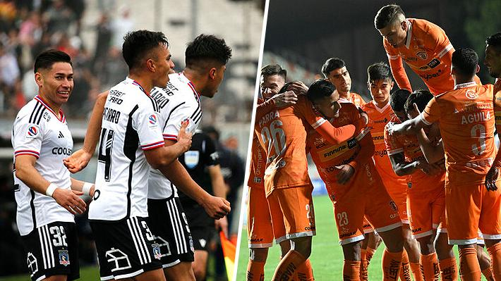

Esta semana se juegan los primeros partidos de la ronda de los cuatro mejores.
Las semifinales de la Copa Chile 2023 se acercan. Esta semana se disputarán los duelos de ida en el camino al título. Dos equipos de Primera y dos de la B sueñan. El vigente campeón, Magallanes, continúa en la lucha. Su llave es contra Universidad de Concepción y el miércoles jugarán la ida en el sur desde las 20:30 horas.
Ese mismo día será el otro encuentro de las semifinales. Colo Colo visitará a Cobreloa en Calama. El cotejo está fijado a las 18:00 horas. Reeditarán un clásico de antaño. Ambos llegan con el ánimo a tope. El Cacique humilló 6-0 al líder Cobresal, mientras que los loínos ganaron y son ahora los únicos punteros de la Primera B. Dependen de sí mismos para lograr en anhelado ascenso.
La vuelta entre Colo Colo y Cobreloa será el miércoles 04 de octubre a las 19:00 horas en el Estadio Monumental. Ese mismo día disputarán la revancha Magallanes y Universidad de Concepción (15:30). Quienes clasifiquen a la final ya saben dónde y cuándo irán por el título. Se jugará a partido único en el estadio Tierra de Campeones de Iquique el 20 de diciembre.
La directiva del club brasileño ya tendría el nombre para reemplazar al técnico argentino.
Los días de Jorge Sampaoli en Flamengo parecen contados. Su salida estaría cada vez más cerca. Al menos en Brasil ya lo ven fuera de su cargo. Su equipo perdió la final de la Copa de Brasil ante Sao Paulo y la prensa local asegura que el despido es inminente. Incluso, revelaron que el técnico argentino se despidió de sus jugadores en el mismo vestuario.
"Ustedes no supieron aprovechar mi persona y yo no los supe aprovechar a ustedes", fueron las palabras del ex DT de la "Roja" en el vestuario, según informó el medio Globoesporte. No solo habló Sampaoli, también sus ayudantes. Y de acuerdo a la versión, todos siguieron el mismo camino "hablando en tono de despedida".
Incluso, la prensa local dio el nombre del candidato que quiere Flamengo. Tite, ex técnico de la selección brasileña, fue contactado por la dirigencia del cuadro del Río de Janeiro. Eso sí, avisan que Sampaoli no renunciará. Tendrán que despedirlo. Y para ello el "Mengao" tendría que desembolsar casi 2 millones de euros, según Globoesporte.